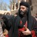
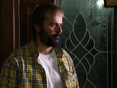
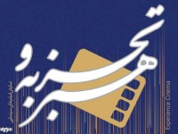
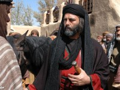

<!DOCTYPE html>
<!--[if lt IE 7]>      <html class="no-js lt-ie9 lt-ie8 lt-ie7"> <![endif]-->
<!--[if IE 7]>         <html class="no-js lt-ie9 lt-ie8"> <![endif]-->
<!--[if IE 8]>         <html class="no-js lt-ie9"> <![endif]-->
<!--[if gt IE 8]><!--> <html class="no-js"> <!--<![endif]-->
    <head>
               <meta charset="utf-8">
        <meta http-equiv="X-UA-Compatible" content="IE=edge">                                                                                                                 <meta http-equiv="content-type" content="text/html; charset=UTF-8">                                                                    <meta name="description" content="">
        <meta name="viewport" content="width=device-width, initial-scale=1">
 <meta name="generator" content="WordPress 4.0">
<meta charset="UTF-8">
<meta http-equiv="refresh" content="600">
<link href="https://plus.google.com/102362244272472354126" rel="publisher">
<link rel="shortcut icon" href="http://www.sourehcinema.ir/SCIRW.ico" type="image/x-icon">
  <title>dindar</title>   
        <!-- Place favicon.ico and apple-touch-icon.png in the root directory -->
        
        <link rel="stylesheet" href="css/normalize.css">
        <link rel="stylesheet" href="css/main.css">
         <link rel="stylesheet" href="css/font.css">
         <link rel="stylesheet" href="css/style.css">
        
        
        <script src="js/vendor/modernizr-2.6.2.min.js"></script>
        
    </head>
    <body>
        <!--[if lt IE 7]>
            <p class="browsehappy">You are using an <strong>outdated</strong> browser. Please <a href="http://browsehappy.com/">upgrade your browser</a> to improve your experience.</p>
        <![endif]-->

        <!-- Add your site or application content here -->
        <header>
        <div class="head">
		<div id=headavl>
        <div id="headvasat">
            
      <form action="http://www.sourehcinema.ir/" method="get"  id="topSearchForm">
      <div id="topSearchField">
      <div id="align_right_jostojo">
        
        	      <input name="zz" value="جستجو....." type="text" id="textjost"  >
          
        </div></div>
        <div id="leftBox"></div>
    </div>
    
</form>                <div id="aban">
         دوشنبه ۱۲ آبان ۱۳۹۳                 </div> <!-- End Top Page Container -->
            
        </div><!-- End Top Page -->
        
         <div class="gradientBG1" id="logoSection">
             </div>
            
          <div id="secdiv" class="gradientBG2">
            
              <nav  >
                <ul>
                  <li  class="nav_ul" id="nav_ul_vast" >
                      
                    <a href="#">منوی اصلی  </a>
                    
                    </li>
                  <li class="nav_ul">
                       <a href="#">اخبار  </a>
                    </li>
                    <li  class="nav_ul">
                    <a href="#">عکس و ویدیو</a>
                  </li>
                  <li  class="nav_ul">
                    <a href="#">سینما</a>
                  </li>
                    <li class="nav_ul">
                    <a href="#">جشنواره</a>
                  </li>
        
                
                                                                
                
                  </ul>
                
                </nav>  
           </div>
            </div>
</header>
        
   
        
     <aside id="aside" class="title">
     <div  >آخرین اخبار</div>
         <div></div> 
     <div class="text_aside">نمایش موضوعی</div>
           <p></p>
             <div class="divider"></div>

        <div class="text_aside"> نمایش براساس</div>   

        </aside>    
    

    <section id="sectionvasat">  
        <article>
           
               <div id="article1" class="detailsView"> 
            
              <div class="pagination-list">
              <ul class="pagination">
            <li class="current1"><a href="#0">تولید یک فیلم انقلابی با حمایت سازمان سینمایی/ «آراز» درباره قیام مردم تبریز</a></li> 
          <li class="current2"><a href="#1">درباره حضور ۱۰ ساله ضرغامی در صدا و سیما/ تولید برنامه‌های چالشی و توجه به
              بخش‌های خبری</a></li> <li class="current3"><a href="#2">آنچه میرباقری در «مختارنامه» انجام داد/ نگاه حماسی به فرهنگ عاشورا</a>
                                </li> </ul>
                        
                </div>
                  
                <a href="#0" ></a> 
                <a href="#0"></a> 
                <a href="#0"></a> 
           
    
                   </div>
             
        </article>
        <div class="matavasarsection">تغییر نحوه نمایش خبر</div>
        
         <section id="article12"class="border_sections" >
         
    
       
         <a href="#0"></a> 
             <div id="title" >
                                                
                                                    
                                                    <a href="#0">
                                                        </a>
                                                    <span class="subtitle">با حضور علی مصفا </span><br> 
                                                    
                                                    <span > اولین عکس‌های فیلم «چاقی»  </span>
                                                                                                      </a>
                                            </div>
           
             ۱۷	 آبان ۱۳۹۳ ۹:۴۲
             
                                                فیلم‌برداری فیلم سینمایی
 «چاقی» به کارگردانی راما قویدل در لوکیشنی واقع در سعادت آباد تهران 
ادامه دارد.                                         
                  
                  <div class="barf">عکس فیلم</div>
             <div class="barf">گزارش تصویری</div>
              
         
        </section> 
        
        
        
        
        
         <section>
         <div id="article12" class="detailsView"> 
         <a href="#0"></a> 
             <div id="title" >
       
                  
           
                                               
                                 <a href="#0"> 
                                     </a>
                           <span class="subtitle"> بازنویسی فیلمنامه «شگفت‌انگیزان </span><br>     
                    
                           </a>
             
                                            </div>
             ۱۷	 آبان ۱۳۹۳ ۹:۰۴<br>

             مینی‌سریال «شصت و سه، نود و سه» در آستانه پیش‌تولید<br>
             
             <div class="barf">اخبار</div>
             <div class="barf">سینما</div>
        </section> 
        
         <section>
         <div id="article12" class="detailsView2"> 
         <a href="#0"></a> 
             <div id="title" >
       
                  
           
                                               
                                 <a href="#0"> 
                                     </a>
                           <span class="subtitle"> قربانی برای «پرده‌نشین» می‌خواند  </span><br>     

                    
                           </a>
                                          
             
                                               
                                                                        
                                      .
                                  
                                            </div>
             ۱۷	 آبان ۱۳۹۳ ۸:۵۶<br>

             علیرضا قربانی خواننده تیتراژ مجموعه تلویزیونی «پرده‌نشین» به کارگردانی بهروز شعیبی شد</br>
             <div class="barf">اخبار</div>
        <div class="barf">تلویزیون</div>
        </section> 
       

        <section>
         <div id="article12" class="detailsView2"> 
         <a href="#0"></a> 
             <div id="title" >
                                               
                                 <a href="#0"> 
                                     </a>
                           <span class="subtitle"> تولید یک فیلم انقلابی با حمایت سازمان  سینمایی/ </span><br>     
                              <span class="subtitle">    «آراز» درباره قیام مردم تبریز</span>   

                    
                           </a>
                                          
                                  
                                            </div>
            
جمال شورجه فیلم سینمایی «آراز» را با حمایت مالی سازمان سینمایی می‌سازد.  </br>
        <div class="barf">اخبار</div>
        <div class="barf">تيتر اول</div>
        <div class="barf">سینما</div>
        </section> 
        
       <section>
         <div id="article12" class="detailsView2"> 
         <a href="#0"></a> 
             <div id="title" >
       
                  
           
                                               
                                 <a href="#0"> 
                                     </a>
                           <span class="subtitle"> «برف» میهمان جشنواره فیلم سنگاپور شد
٠ ١+ / ١-
  </span><br>     

                    
                           </a>
                                          
             
                                               
                                                                        
                                      .
                                  
                                            </div>
فیلم سینمایی «برف» ساخته مهدی رحمانی در ادامه حضور بین‌المللی راهی جشنواره فیلم سنگاپور شد.  
           
           <div class="barf">اخبار</div>
           <div class="barf">جشنواره ها</div>
           <a href="#0">
               </a>
           <div class="barf">سینما</div>
        </section> 
        
       <section>
         <div id="article12" class="detailsView2"> 
         <a href="#0"></a> 
             <div id="title" >
       
                  
           
                                               
                                 <a href="#0"> 
                                     </a>
                           <span class="subtitle"> درباره حضور ۱۰ ساله ضرغامی در صدا و سیما </span><br>      <span class="subtitle"> درباره حضور ۱۰ تولید برنامه‌های چالشی و توجه به بخش‌های خبری </span>     

                    
                           </a>
                                          
             
                                               
                                                                        
                                      .
                                  
                                            </div>
در دوران ریاست عزت‌الله ضرغامی بر صدا و سیما بخش‌های خبری گسترش و تعداد برنامه‌های چالشی افزایش یافت. <br>
            <div class="barf">تيتر اول</div>
</section> 
       
       
        
        <section>
         <div id="article12" class="detailsView2"> 
         <a href="#0"></a> 
             <div id="title" >
       
                  
           
                                               
                                 <a href="#0"> 
                                     </a>
                           <span class="koodak">عیادت رییس سازمان سینمایی از کیمیایی  </span><br>     

                    
                           </a>
                                          
             
                                               
                                                                        
                                  
                                  
                                            </div>
دکتر حجت‌الله ایوبی به عیادت مسعود کیمیایی که این روزها در بیمارستان بستری است، رفت.       
        </section> 
        
      
        <section>
         <div id="article12" class="detailsView2"> 
         <a href="#0"></a> 
             <div id="title" >
       
                  
           
                                               
                                 <a href="#0"> 
                                     </a>
                           <span class="subtitle">«پوسته» به سینماها رسید  </span><br>     

                                               <span class="subtitle">« فرخ‌نژاد در یک درام اجتماعی  </span><br>     

                           </a>
                                          
             
                                               
                                                                        
                                    
                                            </div>
            
            
فیلم سینمایی «پوسته» ساخته مصطفی آل احمد پس از شش سال در گروه سینمایی «هنر و تجربه» به نمایش در می‌آید.        </section>        
        <section>
         <div id="article12" class="detailsView2"> 
         <a href="#0"></a> 
             <div id="title" >
       
                  
           
                                               
                                 <a href="#0"> 
                                     </a>
                           <span class="subtitle"> گفتگوهای سینمایی سیدمحمد بهشتی کتاب شد  </span><br>     

                    
                           </a>
                                          
             
                                               
                                                                        
                                    
                                  
                                            </div>
	 آبان ۱۳۹۳ ۱۲:۵۳
کتاب «گفتگوهای سینمایی، سیدمحمد بهشتی» توسط انتشارات روزنه منتشر شد.        </section> 
       
        <section>
         <div id="article12" class="detailsView2"> 
         <a href="#0"></a> 
             <div id="title" >
       
                  
           
                                               
                                 <a href="#0"> 
                                     </a>
                           <span class="subtitle:!Q      ,ݚf<$Kl_Lp 2kSᇾIQ"[`#Ivѽ;`4q$
XhAvw P6ق3^mx[RO8m7hwlA9t$ni|44iY6q``s
:`|2讀ڜ_/[,%DZYSH=wTgw:(5]w߽JZ(.     +k89\a@_gmGi|yP=v@vǙo_gmGi|yP=v@vǙo_gmGi|yP=v@vǙo_gmGi|yP=v@vǙo_gmGi|yP=v@vǙo_gmGi|yPQi5omDr@@APˮ%M.kZ[bA;K/3
<x(;mz;K/3
<x(;mz;K/3
<x(;mz;K/3
<x(;mz;K/3
<x(;mz;K/3
˴<x(;y[&S%6%	
A     ,ݚf<oarWa5(2:OIIH[7 n9m
z@ւ4
@m
zvpkbN$
f8 =N'y
cDt^[瞵3]æco>`Wg8}շv5#L7APkn:oޥ-GGWDfPؖnOT]lq#wyrW
0YAdƎ:|)q k1Ag	 `[q k15q;"f
$@@.V7]x~frޱi$$Ġkl9fq7IJ]1/O{Pj"Q~Vuy묓DizQ]@@@@@@@@@@@@@@@@@@@@@@@@@@@@@@@@@@@@@@@@@@@@@@@@AV\j[UWT<JL10
kZ	$,Ĝ[2*[gNdK#kIBȹƾGIdQeL4Rd	
:bu%+ųZ\_k\fɝ94ϝ6Sdm8m"K:Z\oRk.Z_vЖ2}wE249Z:v``:FeͶ[H5ml1

ƳzvR+tS
ʺeC*P{j.|kI;-l7\=Y)\+&Y_/wM&]Stk&8A["+E’[2뜳!6"nný봔\:Y+m\kz#ĉM3fl
DRp28JLyl+k$۩)ϯs%c6cCa`@iAWdmX+lUsN-qavsH0R][eʣ.ri$mK8ziAُs;2.:#ɹmhS-VqR],·|"5cijvjubDj\&:>{䑰e%
9Da
.Ӽ^#IA7"KՆh?lruhk} ]M7Wj:	U6|mNeSnoVanRRtt[OO(x--TJ
W|γ;Ziwtۮoޥ-GGDgS,+/+)&dHBk&	K:Q|F#N$gO|h35jmu-zXl.eED6dn[qZVfCwϙS3Z[e{jմ2)ˮu&
k(T8읝Z߬,zòz'Y,v&Q)[Tɍ<q B	_e[֎M*}_qZh%˲eٔ즶]fJM}D5"k:dl{ 0um+_}%`u	tݹd׼F=ʙIdGcEeH5,l4SzT։Sgm.6 e5=wKs+n(oS.Kd۞NNɓ)clIR=Yr= f]]]wy'ɋg^YS1u@"g2C91FtAM+|}-4{[U0%LTOli.!#=af	Mnu:tW˸c!aP%8vtGJOH.OڮSim9Ʒbxh--z0)vyR_o4춋?GܦK3Ck%I"lݖ\썝И]sNOo.Tܩj&
>\WTecA+_G3>C꺏.[+v"KR,^_Q8N9(:Y;10J'T?%Sgהqm.JL6S 'T?)#`f=#
A`F}
A`Tt.
lCIāg	 l5c~k|Y*Zn8:Y*dR2X'h=#uNƽ>Vui:
qS?yxwKQh\-N5
aL6H0;>$Sg)<ն8+n 2cGSzϾRFa85@kwPѿ0Aŭi858
3cn Da
0]*z͒-
kmģ
K6*FT|'V'JWQIVs9"5qٛ-GbKՆ~5Nw{5]u?AP:Af؁?Q6w'Bdp t&xlP:#q3@LbЙ;	*d@LP  ؠt&GBg(28w:<TD6(	øЙ
&@A@LQ2
Bdp t&xlP:#q3 lP^|Л⠂lP:#࠽	*(28w:<TD6(	øЙ
&@A@LQ2
Bdp t&xlP:#q3@LbЙ;	*d@LP  ؠt&GBg(28w:<TD6('C;?FIk40A0aA&8we5ǎp$(-lt
ő$
XhAv0AH
]4ooG
eC^Q&Zee{׺guU	OfH6Yc1׷k hVz.T*,!w
=u4 4;ҵnw]{%5QYl^AS&Qlyy%llz	GNy~x?1C0&K'ɪ믫5W4}u}`ګLȃ~-U&d=u}Q&2/UsIuyTŪ̇;#\fEji3";W4c}D|LȾ0~mU&dA_W}P?2|﨏UsI_Wͪ̈:<\fC_Wяji3"W4]}_@ZLz1>MU&d_]}_?62 믫UsI]}_F>wGɪ̋믫\fDu|wji3!믫5W4}u}`ګLȃ~-U&d]}_ji3#6Qtie̷ֽFOz@)j#CS/gk#`-USk)[6~ɜΔZMtKa@PFAkt@n믫ɼGXVG_W}P?2|﨏UsI_Wͪ̈:<\fC_Wяji3"W4]}_@ZLz1>MU&d_]}_?62 믫UsI]}_F>wGɪ̋믫\fDu|wji3!믫5W4}u}`ګLȃ~-U&d=u}Q&2/UsIuyTŪ̇;#\fEji3";W4c}D|LȾ0~mU&dA_W}P?2|﨏UsI_Wͪ̈:<&2>jS:%\#VMCeP2rͦX/Fc|FVdF;'5TQ>T&\*[DM3s߆1PvAPe92uN68n@Pr0f.h-܀@0f,5GO 4HpAv{
`N9ߗr*},ږgCkgDIЬ0XsPYmAmDZ|]p1o>?ԔFDh:w3dsZhcR{f
W}ώ'c^P:i:C;Q5?YGǡ#g~}VYv G7P|@:	                             gQKǡo{_
0:)ɍuN?>ISc-@c}ACFl!@c@kw6D#H
]4ooWKqmDʪKa.SKĸ`iI&ԕvNJ]\hJA0ktm%\ff#*7PQ6:x0BZ(j"Q~Vu1ø':;	                             gDX7toUřWoaq@ |U‹7na%cd?)*;NMqt|0H2@YKՆi/c %jF|]Ȁ6[a5>|C>]ԵR"iYPݹ2^vfLn"hDkA{[=ou_._(Y'\t ?CZe@{͓u7U5X[i5M|mI]YcܸD-+2;:	GNYƭhkP|%GTnCyؠhο~1fU@v|uU]P@@@@@@@@@@@@@@@@@@@@@@@@@@@@A>ο_=
FfF)*#TNLS$-T6قkAw P6ق
Q85
']X'/.]f_]R3ey#`Kd\FkCЫs)/9b3).s11ej?F$=&]4TAeK`$khIqh=#uNƽ>Vu
usG}
wn?_=
eTZ:1=vYv G7P|u#xTxQuA:?,zZ10XW鳦YAdƎ:|)q k1Ag	 `[q k15q;"f
$@@.V7~P͢'V2SM)bt ._̹lr`m;<lkm+f	.v۞%v#_0sU0Xj[[jOfF-sH-sNAj(j"Q~Vu1ø':;	                             gY
Qacm~k:CkfPm44ofʝJdֵksCXֺ ^NѨ*<(v}qoi\_LH6ڳmgSkls拍8L@]
+6Łd:G|6D7G(5a{}wi 6:IvѽG 4
@m
zgʧ4MDI$s6X.-l"0՞y۽9(q.{&Ts_M{%ĺ8>Le"̸UUL9;RZ/C"ƀH$b3c1tPjujL6]YTxIuAeD9.aM2C	a&,kyPKU2^ܪ\Lɦ[_(5D~I@U#@ ᳻<&r	&uT.&y"\LH	iygۖxvbN>σI)qSncZVk.[e
8E^{mbL4X^LS$-T6قkAw P6ق
Q85
']X'9v\bGUluϐq̜鶜˖}{%D;<9S۫j;.U[ꊺjY ,dƹe@hb򥣊8#uNƽ>Vu
usG}
x{Œ0
!X6š^\Rɴ$HilEk	tGRl2}DuS\h0ppia{
H@č^;7GToKǡ(ڪoe#mIiEE#89p1i B⒞m4ɛPlݐG@; 
,/ɍuN?>fFa85@kwPѿ0Aŭi858
3cn Da
>.d)r_)tz=D@\
h<yW_Wy3=ݵ.MꂮY&QV4N-l@l4ՙzUޞjmEM<dLl	nsF{.'5j];>:x哮%C
LL,c0Mw*XǕ+^%>!isӶS49l*#K2~fcXMlǻdLs,~Q
:IiUvĠٲ0qd-/f:6#(?L|e¢"`ʉ'YzzM<N5;&a_(QTxQuAt[C"M4փ,mK{K27mFI҇f˞=pq J¾*9t<M|Kٯ3Diq&Mqt|0H2@YKՆi/c %jF|]Ȁ6[a5>u6.(i%85:[I4Q,Ş[nhV9L&mq^^:.{ٍ}
nfl>mu93?HZZf̤lڈLafFaU(Ҡw<?sա֘m
z
D
-+fAYjmSM[r4nuu!l2^ԶM)fFb/y2@`Z+w>W_Sl:9:dʔ%K~6C3m.N˴WVL6껅ogT:3=-LkN"[i2^[f<W
kiiT2Ic:]==+˙4iJs&˙ǗRYiQ:uBUQ>qd 7.sGe.ك][i_q2%Jn6YQ5e>qlgnCK>
Xl);eutƺS&MlfT̗3K df>ɧyA+,ϛ%)k4h2c)ҋ	6`X=o~6$6Vu-&S]-.o_+zFY652U3MC>T{kRd9lrak\cu;gȨOuq}qJiΜņOa}Z9mU6od6sf+a6tT+x3&=LrCX=%3,6mۂ+^2'[,n&eـډp:eY"4;
k7oDfzY⧲\h;/
0E 
.mԺSXY:L:;GhF4hkVFS 'T?)#`f=#
A`F}
A`Tt.
lCIāg	 sn)N_s}uYHĐtVre4JևUvq;1eKikKkJ^XcD:ԍs}?eknj5̦Js"a;rgKw2[=lu1Ch=gOըt4tgyY/i*                             _gIBk\6E#tl,sӌُjub^V\9$g;#%`@"q#u^;7GToKǡi'*ķN.NٟG=2N͓֑ɁEf
u偔dƎ:|)q k1Ag	 `[q k15q;"f
$@@.V7]xy8e{gXvelqWTy_dZgT8
!sNl.zS!$eCjsl&T&M=4sd`%@i8H煮(H@xըtLp iGΤ:4y[Ҡ @cnSJI/GAM*&8 VA4P:4y[Ҡ @cnSJI/GAM*&8 VA4P:4y[Ҡ @cn!k@k]LF>s˨ʕ0OkX9H1Z%O>[gHsfJvLai`VG0HAWtj;
.                             ?gC	CfS^b2ӀI54hnt89ޔLp,+(ɮ<uN$lDmcn,Q%jF@lt
5a{}>.@h-܀@0f>kyZ%s"huHq3C;ml<`VM
͖qL)_lDȐCg#[=՝-%.Cͤ62fZ׵'T:ka2.iXQӥAy~x?1C0D-TyvѫDQ=~2bi-ܔ}2[)dArݹT}2/LM%ϦCsKw%?L:@C۷?ϦEɉrSz~In_t;vSȾs14J>_-ܔ}2 9n>s&&O!9%ϦD~ !۟O"d[)d=g?$rSȃ:sd__̘Kw%?LJ>uCnU?L9InO"sv}~2bi-ܔ}2[)dArݹT}2/LM%Ϧ@uJ>3N/9V$II謘ͮ;ۘBYl)RUN2D0,{v[*T䱲DT@v|uU]P@@@@@@@@@@@@@@@